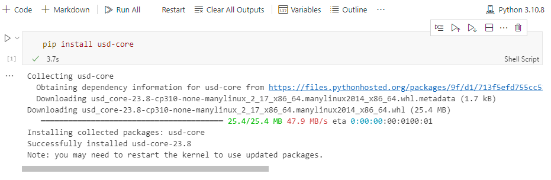

There are various ways to host Jupyter notebooks on a server. In this section we will only cover two options:
At time of writing the recommended option is using
Github Codespaces.
Github Codespaces is a feature available to all tiers of Github users for individuals and organizations.
(At time of writing). Codespaces are hosted on a Linux
environment running Ubuntu. Also a default Python version
is used as the interpreter (e.g. 3.10.8).
It is possible to change the interpreter inside the devcontainer.json
file in the .devcontainer folder. It is also possible
create a virtual environment and chose a Python version as the
interpreter.
The current MaterialX package has been tested to run on this configuration, but it is advisable to check other packages for compatibility.
This section will cover a small subset of functionality to get started. For more information please refer to the Github Codespaces documentation.
To run the notebooks on this site the simplest approaches are:
Fork the MaterialX Learn repository so that a codespace can be created on the fork. This will allow you to edit the notebooks and push changes back to your fork.
Create your own repository and code space and copy over the
notebooks of interest from the pymaterialx folder. Note
that some notebooks use the utility scripts found in the
mtlxutils folder. It is thus advisable to copy over this
subfolder as well.
An example Github repository with the notebooks and utility scripts can be found here
The devcontainer.json file includes a startup command to install package dependencies from the requirements.txt.
This file includes minimally the IPython and MaterialX packages.
To add a codespace to your repository, click on the Code
button and select New Codespace from the dropdown menu.
Below is an example of a codespace creation for the sample repository
using main branch.
By default a “randomly” named new codespace is created with default options. It is possible to also create with custom options by using the “…” button. The codespace can be renamed after creation.
Also by default a Visual Studio Code for Web is used as
the editor. This can be modified from your Github Settings for
CodeSpaces
If using the Visual Studio Code for Web editor, the editor is pretty well the same as the desktop version.
From here it is possible to modify, add / remove content as desired, and push changes back to the repository.
It is possible to sync the the Web editor with the desktop editor as
desired. Additional extensions can be installed as desired. For example
for the JSON notebook the JSONcrack extension was
installed.
Some Python packages are pre-installed in the codespace. To check
what is already available the terminal window can be opened and the
pip list command can be used.
If additional Python packages are required they can be installed
inside a notebook, or in a terminal window. For example the
OpenUsd package can be installed using:
pip install usd-core.

If the package is general to many notebooks the `requirements.txt`` file can be modified and the codespace restarted.
As the MaterialX Package is loaded on startup, notebooks using this package can be run without any additional installation.
At time of writing it does not seem possible to render images using a GPU, though this has not been investigated in detail. As the “rendering notebook” uses OpenGL on Linux, it the rendering of images using notebook is not currently possible in a Codespace environment. It is unknown if MSL will work as a Apple OS environment is not available.
Unlike codespaces, an entire environment setup does not seem possible with performing a number extra steps. This is especially true if there is dependent resources required and to share the notebook.
A quick way to examine any notebook is to use the Open in Colab Chrome extension.
This option however fails to work well for execution when context data or utility scripts are required as only that file is available.
It is possible to access both private and public Github repositories using Colab via this browser link.
To use the repo with extra steps for authentication the repo
containing the notebooks can be cloned into the Colab
environment. This is done by running the following Colab cell:
# Clone the repo
!git clone <address of Github repository>For this example the repository is
https://github.com/kwokcb/MaterialX_Learn_Sample_Codespace,
and the notebook is mtlx_json_nootbook.ipynb.
This is also “safe” in the sense that a user of this notebook is not able to save back to the original repository.
After this is done, the current folder can be changed to the root where the notebook resides in order to execute it using the following cell:
# Set the current folder to point to the appropriate folder.
import os
os.chdir('MaterialX_Learn_Sample_Codespace/notebooks') where MaterialX_Learn_Sample_Codespace/notebooks is the
path folder containing the notebook.
Below is a snapshot of the loaded notebook after the clone and folder change is executed.
Note that notebooks in the learning site may require: 1. Python
utilities found in the mtlxutils sub-folder 2. Resource
files found in the data sub-folder
It is possible to access individual files from Github if the URI is
known. Note that the MaterialX file access API does not directly support
network access and thus something like the urlib module
must be used.
For an example of this see the Basics notebook
If sharing is not required and “write” privileges
make be required then the notebook and dpendendt files can also be
uploaded to Google Drive and opened in Colab from
there.
Below is an example of same repository copied to Google Drive and opened from there.
To use the notebook Google Drive must be explicitly mounted using the following cell:
# Mount Google Drive
from google.colab import drive
drive.mount('/content/drive')The current folder can then be changed to location of the notebook.
At time of writing there unfortunately appears to be nothing
equivalent in Colab to the “dev container” setup found in
Codespaces.
Thus it is necessary to install the `MaterialX`` or any other package dependencies from within each notebook. For example to use MaterialX the follow cell can be added to the notebook:
# Install MaterialX from PyPi
!pip install MaterialX